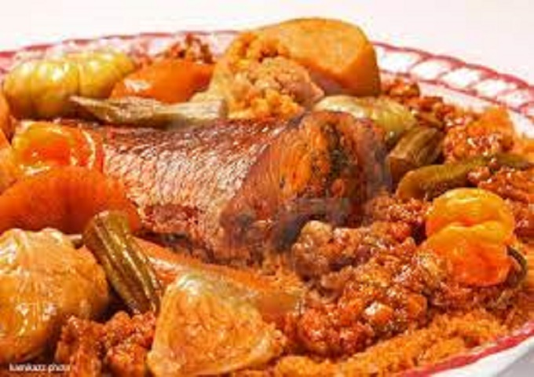
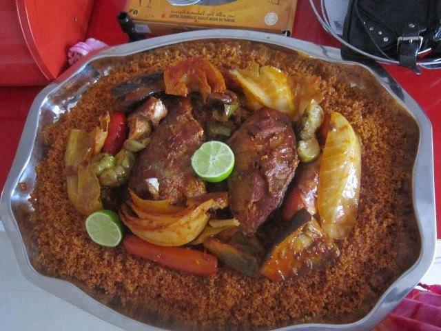

Thiébou dieune (Ceebu jën, according to the Wolof, senegalese national language spelling) is a traditional dish made with rice, fish and a variety of vegetables. Prepared with or without the tomato, it is served as a breakfast dish in most households and in restaurants across Senegal. The origin of this specialty is associated with Saint-Louis, a coastal town in the north of the country. Former capital of French West Africa (AOF), Saint-Louis is itself listed in the material heritage of Unesco.
Unesco has listed Wednesday 15th December 2021, thiébou dieune , a very popular dish in Senegal, as an intangible cultural heritage of humanity, the organization announced on social networks. The thiébou dieune registration application file was introduced in October 2020 by the Senegalese Ministry of Culture.
Our main dish named thiebou djeun (Fish and rice) from Senegal.
Our main dish named thiebou djeun (Fish and rice) from Senegal.